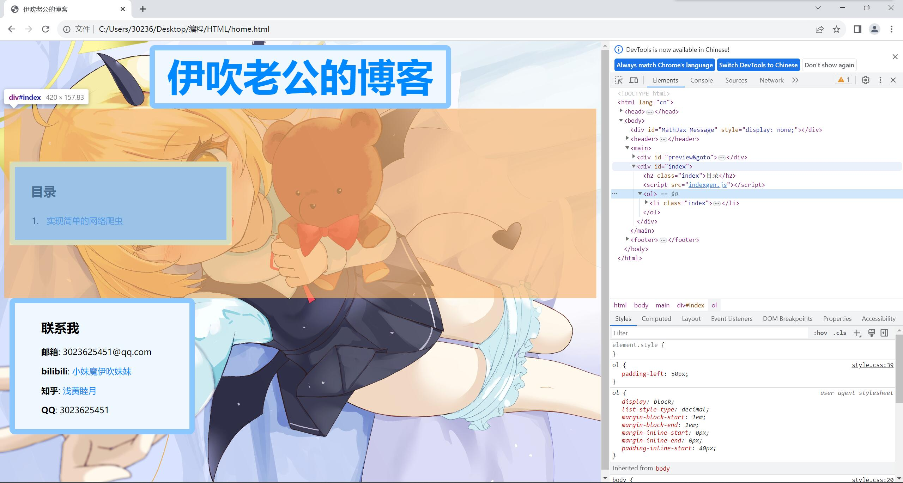

本文将介绍以Python为工具, 在某些网站上实现简单的网络爬虫的方法. 本文涉及的网站有如下特点: 即使不需要登录也可以无限下载或者获取所需资源(如果有下载配额也可以用, 但是在达到配额后自然就会停下). 实际上能使用在哪些场景, 在看完本文介绍的方法后就自然清楚了.
在经过HTML的学习后, 我们知道我们所看到的网页由许许多多的元素组成, 这些元素就像容器, 来装载着网页的各种各样的内容. 爬虫本质上是为了获取网页上各种各样的资源, 所以首先我们必须要知道我们想获取的资源在哪里. 以我的博客为例(下图), 假设左边的目录有许多的项目, 我希望得到每个项所指向的链接. 首先按F12打开开发者工具, 选择elements即可看到网页的html源码. 将鼠标放在右边源码的元素上即可看到页面有部分项目被蓝色包围, 也就是说鼠标悬停的元素决定了这部分页面. 一步一步地, 我们可以找到属性class的值为"index"的li元素, 而其以a元素做子元素, 我们所需的资源经常就在a元素中, 因为a元素有href属性, href属性的值往往就是我们需要的链接.
那么现在我们已经知道了需要的链接在哪了, 但是编程的时候我们该怎么表达那个位置呢? 在学习CSS的时候, 我们接触到了选择器这个工具, 选择器可以通过元素种类, 元素的class, 元素的id等属性来获取所有(或者第一个)满足条件的元素. 例如下面的代码, 第一句将返回列表, 列表的每一项都是div元素, 第二句将返回列表, 列表的每一项都是满足class属性为"abc"的article元素, 第三句则是找到第一个class属性为"xx"的a元素, 并返回它的href属性的值. 还有其他各种各样的选择器, 例如ID选择器, 子元素选择器, 后代选择器等等, 在网络上搜索bs4, CSS选择器就能查找到用法, 读者可以根据自己的需要来寻找合适的.
# soup是bs4模块构建的一个实例, 可以理解成解析后的html文件, 前面的代码全部省略
divs = soup.find_all("div")
articles = soup.find_all("article", class_="abc")
link = soup.find("a", class_="xx")["href"]
现在我们有了拿到解析后的html源码就能获得所需资源的能力, 下面的任务则是解决网络请求问题. 可以使用requests模块来发送网络请求, 但是这个方法有可能会失效, 例如遇到动态生成的网页时. 除此之外还可以使用selenium模块来发送网络请求, selenium模块可以模拟用户来从浏览器访问网页, 这个方法可以解决动态生成元素的问题, 下面分别介绍两种用法, 假设我们想访问的网址为url:
先是使用requests模块
import requests
from bs4 import BeautifulSoup
# 发送网络请求
response = requests.get(url)
html = response.text
soup = BeautifulSoup(html, "html.parser")
再是使用selenium模块
from selenium import webdriver
# 创建chrome浏览器实例
driver = webdriver.Chrome()
# 访问url
driver.get(url)
# 解析html
soup = BeautifulSoup(driver.page_source, 'html.parser')
使用上面两种方法, 均可以得到解析后的html, 即变量soup, 而再通过选择器可以选择到自己需要的资源, 例如href值, 例如text, 例如src值... 最后再介绍使用Python下载链接文件的方法. 例如我获取到的某个a元素href值是下载链接, url="..../xx.zip", 如果每条都手动下载显然违背了爬虫解放双手的初衷, 好在Python的requests模块就可以下载, 再配上os模块的文件管理功能, 即可把文件保存到本地.
import requests
import os
# 发送GET请求
response = requests.get(downloadurl)
# 打开一个文件test，写入二进制数据
with open("test", "wb") as file:
f.write(response.content)
file.close()
# 重命名并转移文件到指定的路径
os.rename("test", "xx.zip")
但是上面这种方法有一个缺陷, 即完全不知道自己的进度, 难以判断网络好坏或者有没有相关异常. 但是幸运的是, 借助tqdm模块, 我们可以给下载加上进度条, 例如下面代码就定义了一个函数, 可以把指定的downloadurl下载下来, 并且保存到path路径, 最重要的是在下载的过程中, 控制台会实时更新进度条.
import requests
import os
from tqdm import tqdm
def downloadfromurl(downloadurl,path):
# 发送HEAD请求，获取文件大小
response = requests.head(downloadurl)
size = int(response.headers.get("content-length", 0))
# 创建tqdm对象，显示进度条
pbar = tqdm(total=size, unit="B", unit_scale=True)
# 发送GET请求，获取响应流
response = requests.get(downloadurl, stream=True)
# 创建临时文件test来储存下载结果
filename = "test"
# 打开一个文件，写入二进制数据
with open(filename, "wb") as file:
# 遍历响应流的块
for chunk in response.iter_content(chunk_size=1024):
# 如果块不为空，写入文件并更新进度条
if chunk:
file.write(chunk)
pbar.update(len(chunk))
# 关闭进度条
pbar.close()
file.close()
# 重命名并转移文件到指定的路径
os.rename("test", path)
使用上面的内容, 我们就可以自动化地爬取部分网站的资源, 例如kemono下载, 例如exhentai获取种子等等.
本文到此结束.